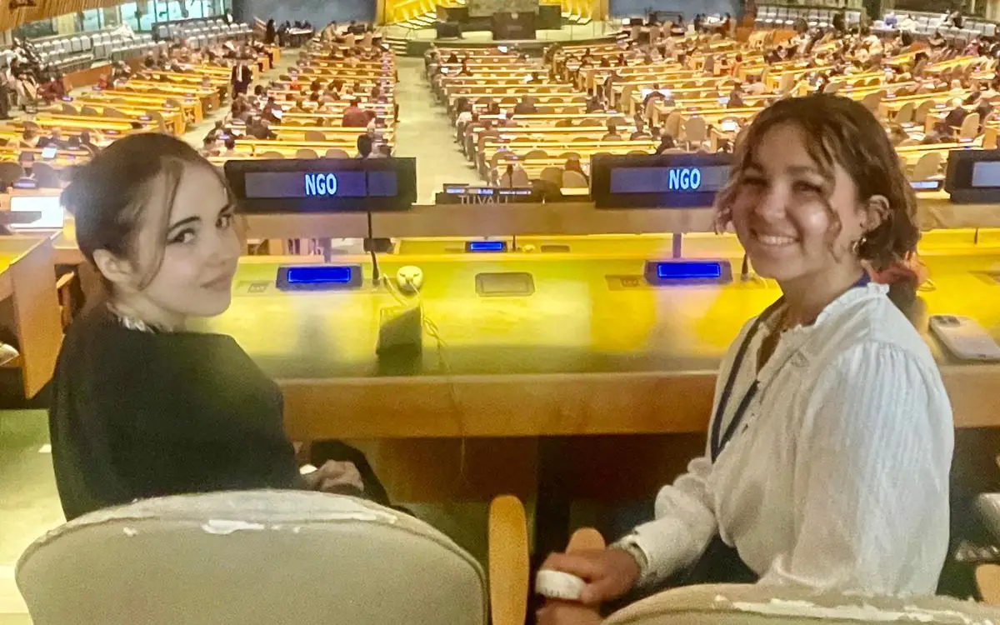
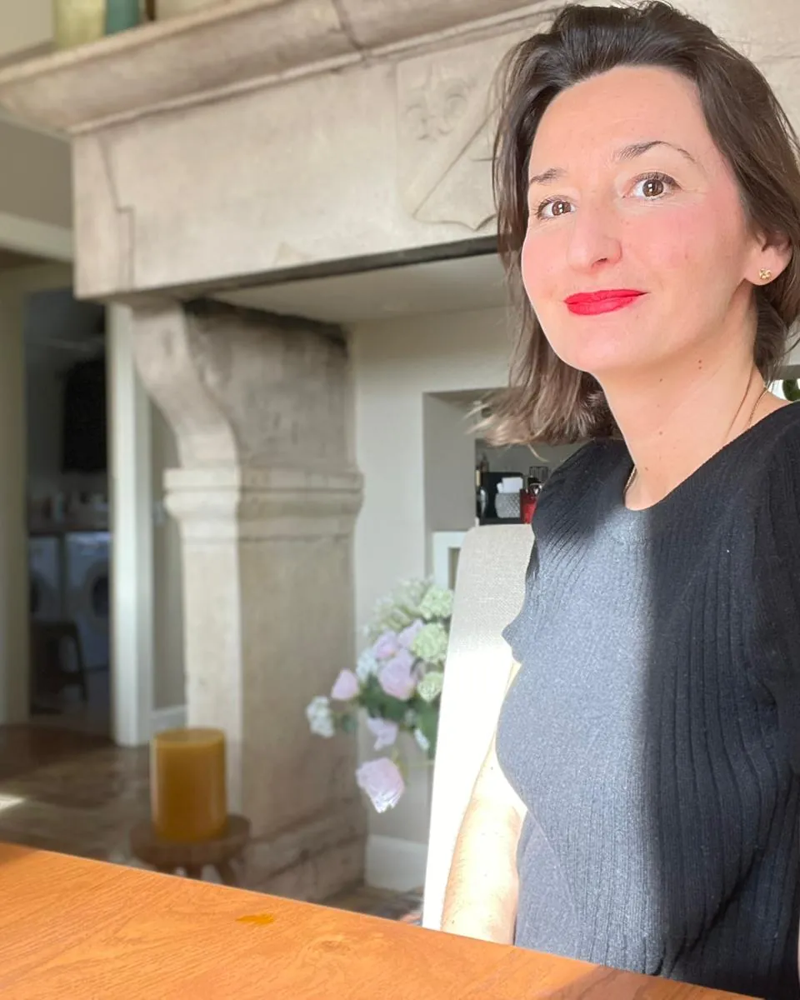
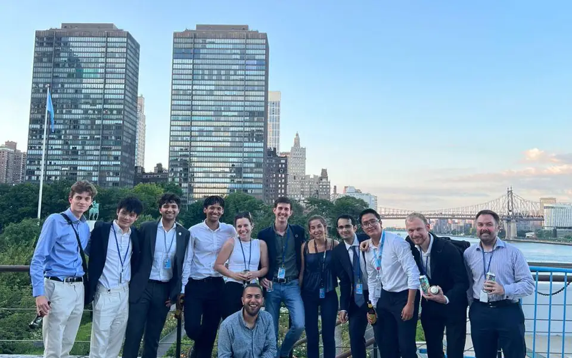

1-month track
June or July · New York month to be confirmed
€2,000
- For a student available in summer
- Quick application and reply
- Access pass to the UN and to events

An ICC training and research programme in New York, to reveal each talent’s singularity and turn it into a concrete contribution to the world.
The Inspire Change vision
Inspire Change lets young talents observe the work of the United Nations up close, so they can find their voice, with their concerns and their hopes.
The programme does not aim to pass on information: it invites each participant to find answers to their own questions through experience. Guided by the Inner Development Goals (IDGs) and the Sustainable Development Goals (SDGs), they produce a research paper serving the 5Ps: Planet, People, Prosperity, Peace and Partnership.

The tracks

June or July · New York month to be confirmed
€2,000

June to August · New York
€4,000

1 year: 3 months in New York (June to August) and 9 months in the company
€6,000NGO rate
€8,000company rate
Note for ICC, to remove before publishing Check the payment schedule against French labour law (10-day withdrawal period, then at most 30% before the balance in instalments), state whether prices include VAT or are VAT-exempt, and confirm Qualiopi certification before any mention of OPCO funding.
Programme timeline
June
July
August
01
Linking your field and research topic to the SDGs and the work of the United Nations, from theory to practice.
02
Drawing on the resources of the UN and of New York: universities, companies, libraries, debates.
03
The flipped classroom: participants come prepared and step into the shoes of a young SDG expert, while the trainer guides.
What ICC provides

Rev. Dr Liberato “Levi” C. Bautista
Programme tutor
President of CoNGO, the Conference of Non-Governmental Organizations, with some 600 NGOs accredited to the UN.
Inspire Change is a training programme run by ICC, an independent organisation: its programmes are neither run nor endorsed by the United Nations. Access to UN premises is through a pass obtained via an ECOSOC-accredited NGO NGO to be specified.
Innovative work-study
The Junior Impact Maker works on a strategic question for their company. They become the keystone between the company and the United Nations, and bring back a systemic view, recommendations and a roadmap.
Train a talent. Transform a company. Contribute to the United Nations goals.
By the company. Funding from an OPCO (French training fund) is only possible if ICC holds Qualiopi certification to be completed
The trainee’s participation is confirmed at this stage.
Research by Junior Impact Makers
Projects by a new generation of changemakers, serving the Sustainable Development Goals. Placeholder covers drawn in code.
« Le programme Inspire Change m’a été extrêmement bénéfique. Il m’a permis de comprendre le fonctionnement des Nations-Unies en pratique, de rencontrer et échanger avec des haut-fonctionnaires. J’ai choisi l’option “alternance”, qui fut un véritable tremplin professionnel tout en étant financée, et rémunérée pendant toute la durée du programme. Mon travail de recherche a été publié dans la revue “Actu-environnement” grâce au soutien du cabinet d’avocat qui m’a sponsorisé. Je recommande ce programme à tout étudiant autonome qui souhaite enrichir son réseau professionnel. »
Chloé MoullecSummer 2023 · Work-study with DS Avocats
Quote in French: Chloé describes the programme as extremely beneficial, explains that the work-study option was funded and paid, and that her research was published in the journal Actu-environnement with the support of the law firm that sponsored her.


How to apply
Indicative deadline, European applicants
Around 1 March 2027, three months before a June start: date to be confirmed by ICC. Outside the EU: apply at least 6 months before the programme starts, to allow for the visa.
The indicative deadline has passed: contact ICC.